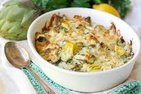

Artichoke Chicken Casserole

Description
My husband and 4-year-old son love this recipe. We have it for dinner at least twice a month. This dish is great over orzo pasta with steamed broccoli or asparagus on the side.
Ingredients
- 1 cup grated Parmesan cheese
- 1 cup light mayonnaise
- 1 pinch garlic powder, or to taste
- 4 (4 ounce) skinless, boneless chicken breast halves
- 1 (14 ounce) can artichoke hearts, drained
- 1 (8 ounce) package crimini mushrooms, sliced
Steps
- Preheat oven to 350 degrees F (175 degrees C).
- Mix Parmesan cheese, mayonnaise, and garlic powder together in a bowl.
- Arrange chicken breasts in a 9x13-inch baking dish; top with artichoke hearts and crimini mushrooms. Spread cheese mixture over the artichoke and mushroom layer.
- Bake in the preheated oven until the chicken no longer pink in the center and the juices run clear, about 30 minutes. An instant-read thermometer inserted into the center should read at least 165 degrees F (74 degrees C).